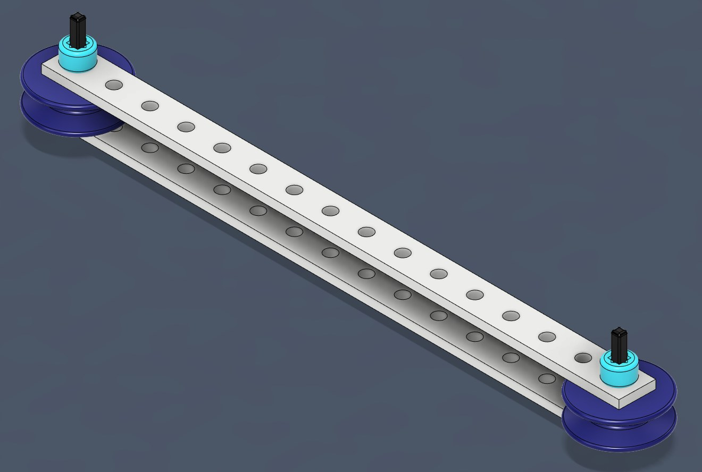
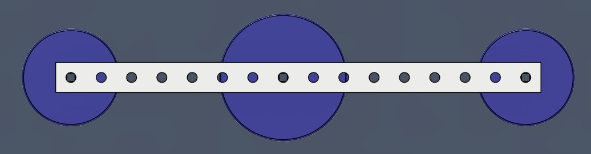
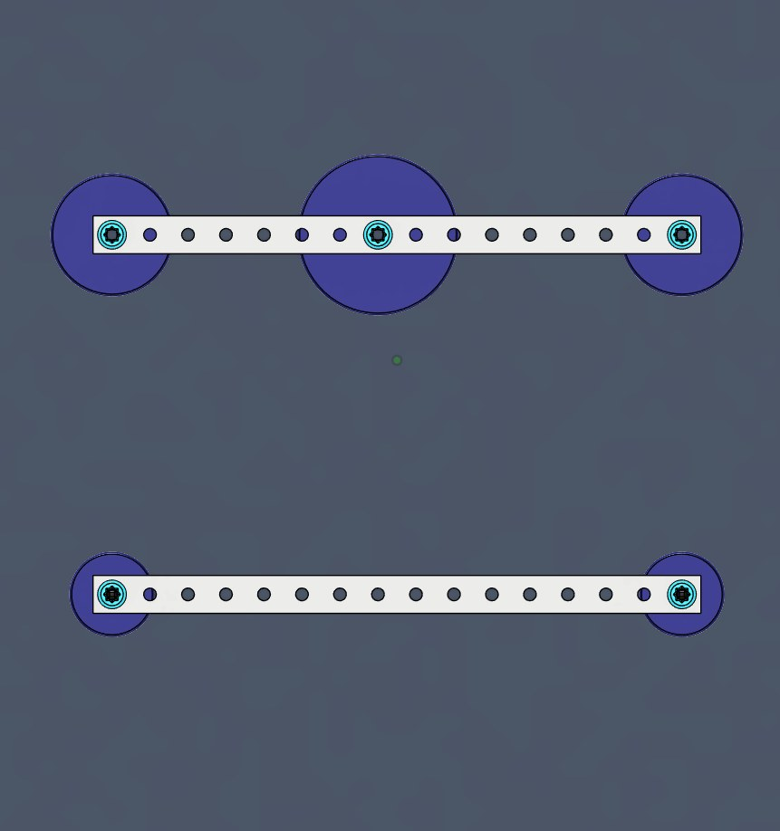

How ropes and pulleys trade a longer pull for a lighter one, and how to measure the advantage they give you.
Would you rather lift a 50 lb box directly, or use a rope and pulley to do it? Why?
Sandwich two pulleys between two MechRails, with one pulley at each end.
You will use this assembly for every experiment today, so build it carefully.

Can you pull one end of the string more easily than the other?
How does the force on the scale compare with the weight of the bottle?
A pulley whose axle stays in one place is called a fixed pulley.
A single fixed pulley redirects the effort, but it does not change the amount. If you pull on one end with some force, the other end pulls with the same force.
What does the scale measure now? How does that compare with System 1?
Build a second assembly with three pulleys: a small pulley at each end of the MechRail and a large pulley in the middle.

The new three-pulley assembly goes on top. One partner holds it in place, so its pulleys stay fixed.
Your first two-pulley assembly hangs below it, with the water bottle still tied to its middle. This assembly moves up with the bottle.

Tie a string to the lower assembly and route it around the pulleys as shown in red.
How much force does the scale need to lift the water bottle?
Keep the water bottle on the lower assembly. Reroute the string as shown, so that it also wraps around the lower left pulley.
How much force does the scale need to lift the water bottle now?
Keep the water bottle on the lower assembly. Reroute the string one more time, so that it also passes over the top left pulley.
How much force does the scale need to lift the water bottle this time?
What happened to the force on the scale as the string wrapped around more pulleys?
Compare your measurements for System 1, System 2, and Routes 3A, 3B, and 3C.
In System 2 and System 3, the lower assembly rode up along with the bottle. A pulley that moves with the load is called a movable pulley.
Fixed and movable pulleys in combination are called a block and tackle. A block and tackle provides mechanical advantage, and it can also change the direction you pull.
But what is mechanical advantage?
Mechanical advantage (MA) compares the resistance, the weight you are lifting, with the effort, your pull. You can find it from the forces or from the distances each one travels.
The effort distance is how far your hand moves. The resistance distance is how far the weight moves.
Where have we seen a ratio like this before?
When a single rope is threaded through a system of pulleys several times, the ideal, or expected, mechanical advantage is easy to count.
In this pulley system, 4 blue strands hold up the motorcycle, so the IMA is 4. The green strand is your pull. It pulls in the same direction as the load, so it doesn’t count.
This block and tackle has an IMA of 4. How hard would you need to pull to lift the 600 lb motorcycle?
Pulleys can also be combined using separate ropes. The output of one pulley system becomes the input of the next, creating a compound machine.
Each movable pulley here cuts the force in half. The 80 lbf load becomes 40, then 20, then only 10 lbf of effort, so the total IMA is 2 × 2 × 2 = 8.
Ideal mechanical advantage is just that: the mechanical advantage in an ideal situation. In the real world, factors such as friction in the pulleys, the weight of the moving pulleys, and the angle of the rope change the ratio we actually see.
To find the actual mechanical advantage (AMA), you have to run the experiment and measure the forces, which takes all of those factors into account.
Just like gear ratios, mechanical advantage involves trade-offs. For both mechanical advantage and gear ratios, 1 is the break-even number.
Less effort force is needed to overcome the resistance, but your hand has to move a longer distance to move the resistance.
More effort force is needed to overcome the resistance, but your hand only has to move a shorter distance to move the resistance.
Mechanical advantage is always greater than 0. It can never be zero or negative.
With your partner, build two pulley systems that are different from the ones we have already tried.
Use multiple pulleys with a single string threaded through them all.
Use multiple strings, where one string’s system acts as the resistance for the next.
Find the IMA and the AMA of each system. Are they the same? If not, what do you think is causing the difference?